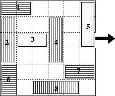

HandTop Co. is developping a a new game, called Traffic! for his line of hand-held computers. Each level of the game is a puzzle where you have to drive a block to the exit of a room filled with other blocks. Of course the other blocks are in the way, and of course, not every movement is possible for each type of block. To make things even more challenging, the user is informed of the minimal number of possible moves so that, even if he solves the puzzle, he can rate its solution against the best possible solution(s).
An example of puzzle is:

The room is a 6 X 6 board, such that the upper-left position has coordinates (0,0) and the bottom-right square has position (5,5).
The room may contain 5 different types of blocks:
A block move (horizontal or vertical) can only be a round number of positions. For instance, the block labeled 1 has the choice between 3 legal moves (1 position to the right, 2 positions to the right, or 3 positions to the right). The white block, labeled 3, has no legal move. Only the white block can move out of the room.
Your goal is, given an initial configuration, compute the minimum number of legal moves to exit the white block.
The first line of the input is N, the number of puzzles for which you have to compute the solution, followed by the N specifications of each puzzle.
A puzzle is specified on five successive lines:The position of a block is the coordinate of the upper-left square it occupies. The coordinate is a pair of integers, each in the range [0, 5], such that the first number identifies the row, while the second identifies the column. Thus, the upper-left square of the screen has coordinates (0, 0), the upper-right square has coordinates (0, 5), the lower-left has coordinates (5, 0), and the lower-right square has coordinates (5, 5).
You can assume that there will always be a sequence of moves to exit the white block.
For each puzzle, the output of your program should produce a line indicating the minimal number of moves to exit the white block.
The following corresponds to the example drawn above:
1 2 1 1 4 0 3 1 0 1 3 0 5 2 0 0 4 4 1 5 2
The minimal number of moves to solve puzzle 1 is 8.